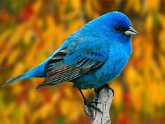

<!DOCTYPE html>
<html lang="en">
<head>
    <meta charset="UTF-8">
    <meta name="viewport" content="width=device-width, initial-scale=1.0">
    <title>Object fit & Position</title>
    <style>
        .container{
            width: 455px;
            height: 488px;
            background-color: aliceblue;
            border: 2px solid black;
            background-position: center center;
            background-image: url(https://img.freepik.com/premium-photo/tranquil-scene-majestic-waterfall-forest-generated-by-ai_986584-2864.jpg);

            /* if image is small then it will not repeat */
            background-repeat: no-repeat;

            /* used to cover which part should img cover */
            background-clip: padding-box;
        }
        /* img{
            width: 455px;
            height: 488px;
            /* now image will cover for the height mentioned for image 
            that is 455 x 488 it will cut the additional image
            and cover dimensions mentioned for that*/
            /* object-fit: cover; */

            /* then top right part is shown and remaining portion is cut */
            /* object-position: top right; */
            /* object-position: 10px 20px; */
            
            /* if we use object fit contain image will not cut but cover dimensions mentioned */
            /* object-fit: contain; */

            /* BY DEFAULT OBJECT FIT WILL BE "FILL" */
            /* object-fit: fill; */

            /* image size is decreased scale down */
            /* object-fit: scale-down; */
       /* } */
    </style>
</head>
<body>
    <div class="container">
        <!--  -->
    </div>
</body>
</html>